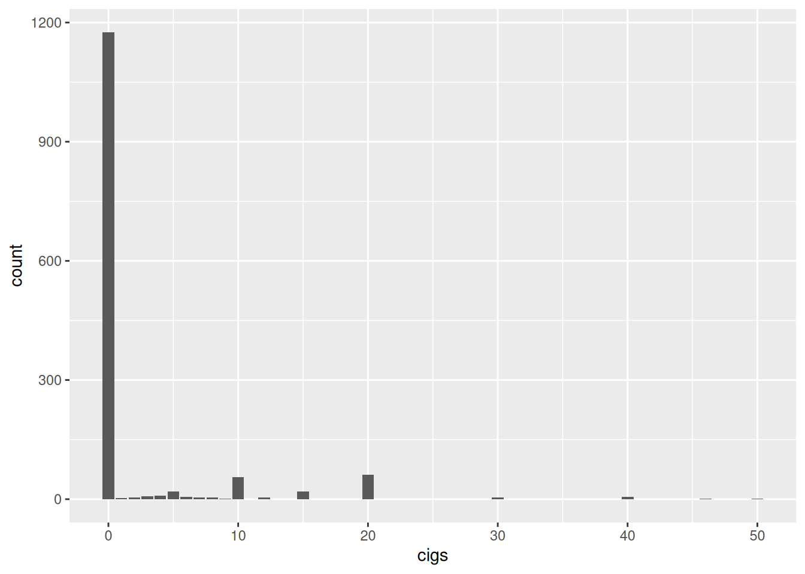
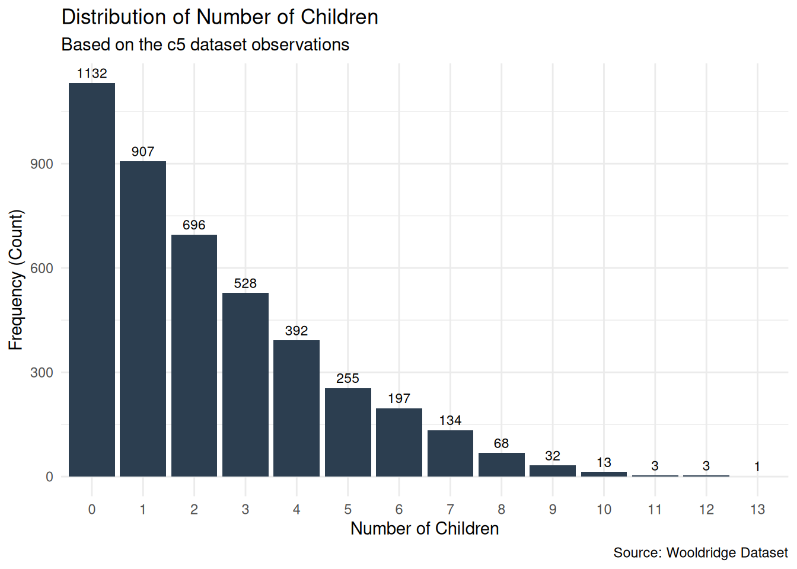

library(tidyverse)
library(wooldridge)
library(knitr)
library(janitor)1 The Nature of Econometrics and Economic Data
1.1 C1 [Wage 1]
Use the data in WAGE1 for this exercise.
c1 <- wage1
kable(head(c1))| wage | educ | exper | tenure | nonwhite | female | married | numdep | smsa | northcen | south | west | construc | ndurman | trcommpu | trade | services | profserv | profocc | clerocc | servocc | lwage | expersq | tenursq |
|---|---|---|---|---|---|---|---|---|---|---|---|---|---|---|---|---|---|---|---|---|---|---|---|
| 3.10 | 11 | 2 | 0 | 0 | 1 | 0 | 2 | 1 | 0 | 0 | 1 | 0 | 0 | 0 | 0 | 0 | 0 | 0 | 0 | 0 | 1.131402 | 4 | 0 |
| 3.24 | 12 | 22 | 2 | 0 | 1 | 1 | 3 | 1 | 0 | 0 | 1 | 0 | 0 | 0 | 0 | 1 | 0 | 0 | 0 | 1 | 1.175573 | 484 | 4 |
| 3.00 | 11 | 2 | 0 | 0 | 0 | 0 | 2 | 0 | 0 | 0 | 1 | 0 | 0 | 0 | 1 | 0 | 0 | 0 | 0 | 0 | 1.098612 | 4 | 0 |
| 6.00 | 8 | 44 | 28 | 0 | 0 | 1 | 0 | 1 | 0 | 0 | 1 | 0 | 0 | 0 | 0 | 0 | 0 | 0 | 1 | 0 | 1.791759 | 1936 | 784 |
| 5.30 | 12 | 7 | 2 | 0 | 0 | 1 | 1 | 0 | 0 | 0 | 1 | 0 | 0 | 0 | 0 | 0 | 0 | 0 | 0 | 0 | 1.667707 | 49 | 4 |
| 8.75 | 16 | 9 | 8 | 0 | 0 | 1 | 0 | 1 | 0 | 0 | 1 | 0 | 0 | 0 | 0 | 0 | 1 | 1 | 0 | 0 | 2.169054 | 81 | 64 |
- Find the average education level in the sample. What are the lowest and highest years of education?
c1 |>
summarise(
Avg_Educ = mean(educ),
Min_Educ = min(educ),
Max_Educ = max(educ)
) |>
round(2) Avg_Educ Min_Educ Max_Educ
1 12.56 0 18Interpretation:
The average education in this sample is approximately 12.5 years. The range is broad ranging from 0 years (no formal education) to 18 years of education (graduate level).
- Find the average hourly wage in the sample. Does it seem high or low?
c1 |>
summarise(
Avg_Wage = mean(wage, na.rm = TRUE)
) |>
round(2) Avg_Wage
1 5.9Interpretation:
The average nominal wage is $5.90. On its own, in 1976 dollars, it might seem low compared to modern standards, but we need to account for inflation to truly judge its purchasing power.
- The wage data are reported in 1976 dollars. Using the Internet or a printed source, find the Consumer Price Index (CPI) for the years 1976 and 2022.
Interpretation:
CPI for 1976 is $56.9 and became $292.7 in 2022.
- Use the CPI values from part (iii) to find the average hourly wage in 2022 dollars. Now does the average hourly wage seem reasonable?
\[ \begin{align*} {Wage}_{2022} &= {Wage}_{1976} \times \dfrac{CPI_{2022}}{CPI_{1976}}\\ &= 5.9 \times \dfrac{292.7}{56.9}\\ &= 30.35 \end{align*} \]
Interpretation:
The average wage in this sample is equivalent to $30.35 in 2022 dollars.The nominal 1976 average wage of $5.90 is more than 2.5 times the 1976 minimum wage of $2.30. Because the sample’s average earnings vastly exceed the baseline wage of its own era, it is highly probable that this sample includes a significant proportion of skilled or experienced labor.
- How many women are in the sample? How many men?
c1 |>
summarise(
Count = n(),
Avg_Wage = mean(wage) |> round(2),
.by = female
) |>
mutate(Gender = ifelse(female == 1, "Female", "Male")) |>
select(Gender, Count, Avg_Wage) Gender Count Avg_Wage
1 Female 252 4.59
2 Male 274 7.10Interpretation:
Although sample is well balanced with 252 females and 274 males, there is a notable wage gap between the genders.
1.2 C2 [BWGHT]
Use the data in BWGHT to answer this question.
c2 <- bwght
kable(head(c2))| faminc | cigtax | cigprice | bwght | fatheduc | motheduc | parity | male | white | cigs | lbwght | bwghtlbs | packs | lfaminc |
|---|---|---|---|---|---|---|---|---|---|---|---|---|---|
| 13.5 | 16.5 | 122.3 | 109 | 12 | 12 | 1 | 1 | 1 | 0 | 4.691348 | 6.8125 | 0 | 2.6026897 |
| 7.5 | 16.5 | 122.3 | 133 | 6 | 12 | 2 | 1 | 0 | 0 | 4.890349 | 8.3125 | 0 | 2.0149031 |
| 0.5 | 16.5 | 122.3 | 129 | NA | 12 | 2 | 0 | 0 | 0 | 4.859812 | 8.0625 | 0 | -0.6931472 |
| 15.5 | 16.5 | 122.3 | 126 | 12 | 12 | 2 | 1 | 0 | 0 | 4.836282 | 7.8750 | 0 | 2.7408400 |
| 27.5 | 16.5 | 122.3 | 134 | 14 | 12 | 2 | 1 | 1 | 0 | 4.897840 | 8.3750 | 0 | 3.3141861 |
| 7.5 | 16.5 | 122.3 | 118 | 12 | 14 | 6 | 1 | 0 | 0 | 4.770685 | 7.3750 | 0 | 2.0149031 |
- How many women are in the sample, and how many report smoking during pregnancy?
c2 |>
summarise(
Count = n(),
Smokers = sum(cigs > 0),
Non_Smokers = sum(cigs == 0)
) Count Smokers Non_Smokers
1 1388 212 1176Interpretation:
The sample contains 1,388 women. Out of these, 212 women (approximately 15%) reported smoking at least one cigarette per day during pregnancy, while 1,176 reported not smoking at all.
- What is the average number of cigarettes smoked per day? Is the average a good measure of the “typical” woman in this case? Explain.
c2 |>
summarise(
Avg_Cigs_All = mean(cigs)
) |>
round(2) Avg_Cigs_All
1 2.09ggplot(c2, aes(x = cigs)) +
geom_bar()
Interpretation:
The sample average is 2.09 cigarettes per day. However, this is not a good measure of a “typical” woman because the vast majority of pregnant females in the sample (about 85%) are non-smokers. The median is 0.
- Among women who smoked during pregnancy, what is the average number of cigarettes smoked per day? How does this compare with your answer from part (ii), and why?
c2 |>
summarise(
Avg_Cigs_Smokers = mean(cigs[cigs > 0])
) |>
round(2) Avg_Cigs_Smokers
1 13.67Interpretation:
A pregnant female who smokes consumes an average of 13.67 cigarettes per day. This is significantly higher than the sample average of 2.09 because this calculation excludes the overwhelming majority of women who bring the overall average down to near zero.
- Find the average of
fatheducin the sample. Why are only 1,192 observations used to compute this average?
c2 |>
summarise(
Avg_Fath_Educ = mean(fatheduc, na.rm = TRUE),
Missing_Obs = sum(is.na(fatheduc))
) |>
round(2) Avg_Fath_Educ Missing_Obs
1 13.19 196Interpretation:
An average father has 13.19 years of education in the sample, with 196 missing data.
- Report the average family income and its standard deviation in dollars.
c2 |>
summarise(
Avg_Fam_Inc = mean(faminc, na.rm = TRUE),
SD_Fam_Inc = sd(faminc, na.rm = TRUE)
) |>
round(2) Avg_Fam_Inc SD_Fam_Inc
1 29.03 18.74Interpretation:
Families included in the sample have an average income of $29,000 with a standard deviation of $18,700
1.3 C3 [MEAP01]
The data in MEAP01 are for the state of Michigan in the year 2001. Use these data to answer the following questions.
c3 <- meap01
kable(head(c3))| dcode | bcode | math4 | read4 | lunch | enroll | expend | exppp | lenroll | lexpend | lexppp |
|---|---|---|---|---|---|---|---|---|---|---|
| 1010 | 4937 | 83.3 | 77.8 | 40.60 | 468 | 2747475 | 5870.673 | 6.148468 | 14.82619 | 8.677725 |
| 2070 | 597 | 90.3 | 82.3 | 27.10 | 679 | 1505772 | 2217.632 | 6.520621 | 14.22482 | 7.704195 |
| 2080 | 4860 | 61.9 | 71.4 | 41.75 | 400 | 2121871 | 5304.678 | 5.991465 | 14.56781 | 8.576344 |
| 3010 | 790 | 85.7 | 60.0 | 12.75 | 251 | 1211034 | 4824.836 | 5.525453 | 14.00698 | 8.481532 |
| 3010 | 1403 | 77.3 | 59.1 | 17.08 | 439 | 1913501 | 4358.772 | 6.084499 | 14.46445 | 8.379946 |
| 3010 | 4056 | 85.2 | 67.0 | 23.17 | 561 | 2637483 | 4701.396 | 6.329721 | 14.78534 | 8.455615 |
- Find the largest and smallest values of
math4. Does the range make sense? Explain.
c3 |>
summarise(
Max_math4 = max(math4),
Min_math4 = min(math4)
) |>
round(2) Max_math4 Min_math4
1 100 0Interpretation:
The sample includes math scores ranging from 0 to 100 indicating wide variety.
- How many schools have a perfect pass rate on the math test? What percentage is this of the total sample?
c3 |>
summarise(
Total_Schools = n(),
Perfect_Math_Count = sum(math4 == 100, na.rm = TRUE),
Percentage = (Perfect_Math_Count / Total_Schools) * 100
) |>
round(2) Total_Schools Perfect_Math_Count Percentage
1 1823 38 2.08Interpretation:
Out of the 1,823 schools in the sample, 38 schools (approximately 2.08%) achieved a perfect 100% pass rate on the fourth-grade math test.
- How many schools have math pass rates of exactly 50%?
c3 |>
summarise(
Schools_at_50 = sum(math4 == 50, na.rm = TRUE)
) Schools_at_50
1 17Interpretation:
There are exactly 17 schools with a pass rate of exactly 50%
- Compare the average pass rates for the math and reading scores. Which test is harder to pass?
c3 |>
drop_na(math4, read4) |>
summarise(
Avg_Math = mean(math4),
Avg_Read = mean(read4)
) |>
round(2) Avg_Math Avg_Read
1 71.91 60.06Interpretation:
The average pass rate for math 71.90% is significantly higher than for reading 60.06%. This shows that the reading exam was harder in the sample.
- Find the correlation between
math4andread4. What do you conclude?
c3 |>
drop_na(math4, read4) |>
summarise(
Correlation = cor(math4, read4)
) |>
round(2) Correlation
1 0.84Interpretation:
The correlation between the two exams is high 0.84 showing that performance in the two exams is similar.
- The variable
expppis expenditure per pupil. Find the average ofexpppalong with its standard deviation. Would you say there is wide variation in per pupil spending?
c3 |>
drop_na(math4, read4) |>
summarise(
Mean_Expnd = mean(exppp),
Std_Expend = sd(exppp)
) |>
round(2) Mean_Expnd Std_Expend
1 5194.87 1091.89Interpretation:
The average expenditure per pupil is $5,194.87, with a standard deviation of $1,091.89 representing a significant spread (21% of the mean).
NoteCoefficient of Variation (CV)
To know if the spread is significant or not, calculate coefficient of variation (cv). \[ CV = \dfrac \sigma \mu\]
Small (cv < 10%)
Medium (cv 10% - 30%)
Large(cv > 30%)
- Suppose School A spends $6,000 per student and School B spends $5,500 per student. By what percentage does School A’s spending exceed School B’s? Compare this to \(100 \times [\log(6,000) – \log(5,500)]\), which is the approximation percentage difference based on the difference in the natural logs?
school_a <- 6000
school_b <- 5500
pct_diff <- ((school_a - school_b) / school_b) * 100
log_diff <- 100 * (log(school_a) - log(school_b))
results <- c(Exact_Pct = pct_diff, Log_Approx = log_diff)
results |> round(2) Exact_Pct Log_Approx
9.09 8.70 Interpretation:
School A spends 9.09% more per student than School B. The logarithmic approximation (\(100 \times \Delta \log\)) yields 8.70, which is a reasonably close estimate.
ImportantLogarithmic Approximation for Percentage Differences
When comparing two cross-sectional observations (such as expenditures between two different schools), we calculate a percentage difference. The exact percentage difference of \(x_1\) relative to \(x_0\) is:
\[\% \text{Difference} = \frac{x_1 - x_0}{x_0} \times 100\]
We can approximate this difference using natural logarithms:
\[\% \text{Difference} \approx 100 \times [\log(x_1) - \log(x_0)]\]
Note: This approximation is only mathematically reliable for small differences (typically less than 10%). For larger gaps, the exact formula must be used.
1.4 C4 [JTRAIN2]
The data in JTRAIN2 come from a job training experiment conducted for low-income men during 1976–1977; see Lalonde (1986).
c4 <- jtrain2
kable(head(c4))| train | age | educ | black | hisp | married | nodegree | mosinex | re74 | re75 | re78 | unem74 | unem75 | unem78 | lre74 | lre75 | lre78 | agesq | mostrn |
|---|---|---|---|---|---|---|---|---|---|---|---|---|---|---|---|---|---|---|
| 1 | 37 | 11 | 1 | 0 | 1 | 1 | 13 | 0 | 0 | 9.93005 | 1 | 1 | 0 | 0 | 0 | 2.295566 | 1369 | 13 |
| 1 | 22 | 9 | 0 | 1 | 0 | 1 | 13 | 0 | 0 | 3.59589 | 1 | 1 | 0 | 0 | 0 | 1.279792 | 484 | 13 |
| 1 | 30 | 12 | 1 | 0 | 0 | 0 | 13 | 0 | 0 | 24.90950 | 1 | 1 | 0 | 0 | 0 | 3.215249 | 900 | 13 |
| 1 | 27 | 11 | 1 | 0 | 0 | 1 | 13 | 0 | 0 | 7.50615 | 1 | 1 | 0 | 0 | 0 | 2.015723 | 729 | 13 |
| 1 | 33 | 8 | 1 | 0 | 0 | 1 | 13 | 0 | 0 | 0.28979 | 1 | 1 | 0 | 0 | 0 | -1.238599 | 1089 | 13 |
| 1 | 22 | 9 | 1 | 0 | 0 | 1 | 13 | 0 | 0 | 4.05649 | 1 | 1 | 0 | 0 | 0 | 1.400318 | 484 | 13 |
- Use the indicator variable
trainto determine the fraction of men receiving job training.
c4 |>
summarise(
Trained = mean(train)
) |>
round(2) Trained
1 0.42Interpretation:
42% of men in the sample received training.
- The variable
re78is earnings from 1978, measured in thousands of 1982 dollars. Find the averages ofre78for the sample of men receiving job training and the sample not receiving job training. Is the difference economically large?
c4 |>
summarise(
Count = n(),
Earnings = mean(re78) |> round(2),
.by = train
) |>
mutate(Train = ifelse(train == 1, "Trained", "Untrained")) |>
select(Train, Count, Earnings) Train Count Earnings
1 Trained 185 6.35
2 Untrained 260 4.55Interpretation:
Trained men received earnings of 6,350 while untrained received 4,550 only. The percentage difference is \(\%\Delta x =\dfrac{6.35 - 4.55}{4.55} = 39.56\%\) which is practically significant. A difference of 1800 is economically significant, especially for low-income men in 1978.
CautionTerminology: Change vs. Difference
Change = Time (Longitudinal) Tracking the same subject across different time periods. * Math: (New - Old) / Old
Difference = Distinct Groups (Cross-Sectional) Comparing separate subjects at the same point in time. * Math: (Group A - Group B) / Group B
- The variable
unem78is an indicator of whether a man was unemployed or not in 1978. What fraction of the men who received job training were unemployed? What about for men who did not receive job training? Comment on the difference.
c4 |>
summarise(
Unemployed = mean(unem78) |> round(2),
.by = train
) |>
mutate(Train = ifelse(train == 1, "Trained", "Untrained")) |>
select(Train, Unemployed) Train Unemployed
1 Trained 0.24
2 Untrained 0.35Interpretation:
24% of the trained men were unemployed while 35% of the untrained men were unemployed. There is a 11 percentage point difference in unemployment between the two groups.
- From parts (ii) and (iii), does it appear that the job training program was effective? What would make our conclusions more convincing?
Interpretation:
Training program appears to be effective to increase earnings from part (ii) and decrease unemployment from part (iii). Conclusions will be more convincing if the random sample was balanced, and we controlled for other factors such as earnings and employment before taking the program.
1.5 C5 [FERTIL2]
The data in FERTIL2 were collected on women living in the Republic of Botswana in 1988. The variable
childrenrefers to the number of living children. The variableelectricis a binary indicator equal to one if the woman’s home has electricity, and zero if not.
c5 <- fertil2
kable(head(c5))| mnthborn | yearborn | age | electric | radio | tv | bicycle | educ | ceb | agefbrth | children | knowmeth | usemeth | monthfm | yearfm | agefm | idlnchld | heduc | agesq | urban | urb_educ | spirit | protest | catholic | frsthalf | educ0 | evermarr |
|---|---|---|---|---|---|---|---|---|---|---|---|---|---|---|---|---|---|---|---|---|---|---|---|---|---|---|
| 5 | 64 | 24 | 1 | 1 | 1 | 1 | 12 | 0 | NA | 0 | 1 | 0 | NA | NA | NA | 2 | NA | 576 | 1 | 12 | 0 | 0 | 0 | 1 | 0 | 0 |
| 1 | 56 | 32 | 1 | 1 | 1 | 1 | 13 | 3 | 25 | 3 | 1 | 1 | 11 | 80 | 24 | 3 | 12 | 1024 | 1 | 13 | 0 | 0 | 0 | 1 | 0 | 1 |
| 7 | 58 | 30 | 1 | 0 | 0 | 0 | 5 | 1 | 27 | 1 | 1 | 0 | 6 | 83 | 24 | 5 | 7 | 900 | 1 | 5 | 1 | 0 | 0 | 0 | 0 | 1 |
| 11 | 45 | 42 | 1 | 0 | 1 | 0 | 4 | 3 | 17 | 2 | 1 | 0 | 1 | 61 | 15 | 3 | 11 | 1764 | 1 | 4 | 0 | 0 | 0 | 0 | 0 | 1 |
| 5 | 45 | 43 | 1 | 1 | 1 | 1 | 11 | 2 | 24 | 2 | 1 | 1 | 3 | 66 | 20 | 2 | 14 | 1849 | 1 | 11 | 0 | 1 | 0 | 1 | 0 | 1 |
| 8 | 52 | 36 | 1 | 0 | 0 | 0 | 7 | 1 | 26 | 1 | 1 | 1 | 11 | 76 | 24 | 4 | 9 | 1296 | 1 | 7 | 0 | 0 | 0 | 0 | 0 | 1 |
- Find the smallest and largest values of
childrenin the sample. What is the average ofchildren?
c5 |>
summarise(
Min = min(children),
Max = max(children),
Average = mean(children)
) |>
round(2) Min Max Average
1 0 13 2.27ggplot(c5, aes(x = factor(children))) +
geom_bar(fill = "#2c3e50") +
geom_text(stat = "count", aes(label = after_stat(count)), vjust = -0.5, size = 3, color = "black") +
theme_minimal() +
labs(
title = "Distribution of Number of Children",
subtitle = "Based on the c5 dataset observations",
x = "Number of Children",
y = "Frequency (Count)",
caption = "Source: Wooldridge Dataset"
)
Interpretation:
Number of children is heavily right skewed. 1132 women had 0 children while only one woman had a maximum number of 13 children.
- What percentage of women have electricity in the home?
c5 |>
summarise(
Has_Electricity = mean(electric, na.rm = TRUE)
) |>
round(2) Has_Electricity
1 0.14Interpretation:
14% of the women in the sample had home electricity.
- Compute the average of
childrenfor those without electricity and do the same for those with electricity. Comment on what you find.
c5 |>
drop_na(electric) |>
summarise(
Avg_Children = mean(children) |> round(2),
.by = electric
) |>
mutate(Home_Electricity = ifelse(electric == 1, "Has Electricity", "No Electricity")) |>
select(Home_Electricity, Avg_Children) Home_Electricity Avg_Children
1 Has Electricity 1.90
2 No Electricity 2.33Interpretation:
Women who had access to electricity have lower average children (1.9) compared to women with no electricity (2.33)
- From part (iii), can you infer that having electricity “causes” women to have fewer children? Explain.
Interpretation:
No, we cannot conclude that having electricity causes women to have fewer children based solely on this data. While there is a clear negative correlation, this simple comparison in averages suffers heavily from omitted variable bias. Electricity in the home is likely a proxy variable for broader confounding factors—such as higher household income, urban residency, or better access to education and healthcare—which are the more probable underlying drivers of lower fertility rates.
1.6 C6 [COUNTYMURDERS]
Use the data in COUNTYMURDERS to answer this question. Use only the year 1996. The variable
murdersis the number of murders reported in the county. The variableexecsis the number of executions that took place of people sentenced to death in the given county. Most states in the United States have the death penalty, but several do not.
#|label: c6_data
c6 <- countymurders |>
filter(year == 1996)
kable(head(c6))| arrests | countyid | density | popul | perc1019 | perc2029 | percblack | percmale | rpcincmaint | rpcpersinc | rpcunemins | year | murders | murdrate | arrestrate | statefips | countyfips | execs | lpopul | execrate |
|---|---|---|---|---|---|---|---|---|---|---|---|---|---|---|---|---|---|---|---|
| 8 | 1001 | 67.21535 | 40061 | 15.89077 | 13.17491 | 20.975510 | 48.70073 | 192.038 | 11852.760 | 26.796 | 1996 | 7 | 1.7473350 | 1.9969550 | 1 | 1 | 0 | 10.598160 | 0 |
| 6 | 1003 | 77.05643 | 123023 | 13.93886 | 11.63929 | 13.496660 | 48.83233 | 139.084 | 13583.020 | 28.710 | 1996 | 6 | 0.4877137 | 0.4877137 | 1 | 3 | 0 | 11.720130 | 0 |
| 1 | 1005 | 29.91548 | 26475 | 15.06327 | 13.69972 | 46.190750 | 49.15203 | 405.768 | 10760.510 | 63.162 | 1996 | 1 | 0.3777148 | 0.3777148 | 1 | 5 | 0 | 10.183960 | 0 |
| 0 | 1009 | 67.20457 | 43392 | 14.17542 | 12.99318 | 1.415007 | 48.97446 | 184.382 | 11094.820 | 21.692 | 1996 | 2 | 0.4609145 | 0.0000000 | 1 | 9 | 0 | 10.678030 | 0 |
| 1 | 1011 | 17.89899 | 11188 | 14.98927 | 14.13121 | 72.756520 | 49.91956 | 485.518 | 8349.506 | 63.162 | 1996 | 0 | 0.0000000 | 0.8938148 | 1 | 11 | 0 | 9.322598 | 0 |
| 2 | 1013 | 27.71148 | 21530 | 15.68509 | 11.25871 | 41.384110 | 46.81839 | 357.918 | 9947.058 | 54.868 | 1996 | 2 | 0.9289364 | 0.9289364 | 1 | 13 | 0 | 9.977202 | 0 |
- How many counties are there in the data set? Of these, how many have zero murders? What percentage of counties have zero executions?
c6 |>
summarise(
Counties = n_distinct(countyid),
Zero_Murders = sum(murders == 0),
Pct_Zero_Executions = mean(execs == 0) * 100
) |>
round(2) Counties Zero_Murders Pct_Zero_Executions
1 2197 1051 98.59Interpretation:
There are 2197 counties in the sample. Out of these, 1051 have zero murders, and 98.59% of them have zero executions.
- What is the largest number of murders? What is the largest number of executions? Compute the average number of executions and explain why it is so small.
c6 |>
summarise(
Max_Murders = max(murders),
Max_Execs = max(execs),
Avg_Execs = mean(execs)
) |>
round(2) Max_Murders Max_Execs Avg_Execs
1 1403 3 0.02c6 |>
tabyl(execs) |>
adorn_pct_formatting() execs n percent
0 2166 98.6%
1 28 1.3%
2 2 0.1%
3 1 0.0%Interpretation:
Largest number of murders is 1403 while largest number of executions is only 3. Average execution is 0.02 because 98.6% of the sample have zero executions, 1.3% have 1 execution, leaving only 0.1% for 2 executions.
- Compute the correlation coefficient between
murdersandexecsand describe what you find.
c6 |>
summarise(
Correlation = cor(murders, execs)
) |>
round(2) Correlation
1 0.21Interpretation:
There is a weak correlation (0.21) between murders and executions.
- You should have computed a positive correlation in part (iii). Do you think that more executions
causemore murders to occur? What might explain the positive correlation?
Interpretation:
No, more executions do not “cause” more murders. The positive, albeit weak, correlation (0.21) is highly misleading for several reasons:
- Omitted Variable Bias: The raw counts ignore population size. Highly populated counties will naturally have higher absolute numbers of both murders and executions compared to rural counties.
- Reverse Causality: The causal arrow likely points the other direction. Counties experiencing higher murder rates might face intense public and political pressure to utilize the death penalty more frequently in response to the crime wave.
- Justice System Lag & Attrition: Executions in 1996 are punishments for crimes committed years or decades prior. Furthermore, many murders go unsolved, meaning the immediate murder count does not directly map to execution rates.
- Extreme Data Skew (Zero-Inflation): Because 98.6% of the counties had exactly zero executions, this data is heavily right-skewed and zero-inflated. A standard linear correlation metric is mathematically inadequate for capturing the true dynamic here.
1.7 C7 [ALCOHOL]
The data set in ALCOHOL contains information on a sample of men in the United States. Two key variables are self-reported employment status and alcohol abuse (along with many other variables). The variables
employandabuseare both binary, or indicator, variables: they take on only the values zero and one.
c7 <- alcohol
kable(head(c7))| abuse | status | unemrate | age | educ | married | famsize | white | exhealth | vghealth | goodhealth | fairhealth | northeast | midwest | south | centcity | outercity | qrt1 | qrt2 | qrt3 | beertax | cigtax | ethanol | mothalc | fathalc | livealc | inwf | employ | agesq | beertaxsq | cigtaxsq | ethanolsq | educsq |
|---|---|---|---|---|---|---|---|---|---|---|---|---|---|---|---|---|---|---|---|---|---|---|---|---|---|---|---|---|---|---|---|---|
| 1 | 1 | 4.0 | 50 | 4 | 1 | 1 | 1 | 0 | 0 | 0 | 0 | 0 | 1 | 0 | 0 | 0 | 1 | 0 | 0 | 0.334 | 38 | 2.03946 | 0 | 0 | 0 | 0 | 0 | 2500 | 0.111556 | 1444 | 4.159397 | 16 |
| 0 | 3 | 4.0 | 37 | 12 | 1 | 5 | 1 | 0 | 0 | 1 | 0 | 0 | 1 | 0 | 0 | 0 | 1 | 0 | 0 | 0.334 | 38 | 2.03946 | 0 | 0 | 0 | 1 | 1 | 1369 | 0.111556 | 1444 | 4.159397 | 144 |
| 0 | 3 | 4.0 | 53 | 9 | 1 | 3 | 1 | 1 | 0 | 0 | 0 | 0 | 1 | 0 | 0 | 0 | 1 | 0 | 0 | 0.334 | 38 | 2.03946 | 0 | 0 | 0 | 1 | 1 | 2809 | 0.111556 | 1444 | 4.159397 | 81 |
| 0 | 3 | 3.3 | 59 | 11 | 1 | 1 | 1 | 1 | 0 | 0 | 0 | 1 | 0 | 0 | 1 | 0 | 1 | 0 | 0 | 0.240 | 26 | 2.44998 | 0 | 0 | 0 | 1 | 1 | 3481 | 0.057600 | 676 | 6.002402 | 121 |
| 0 | 3 | 3.3 | 43 | 10 | 1 | 1 | 1 | 1 | 0 | 0 | 0 | 1 | 0 | 0 | 1 | 0 | 1 | 0 | 0 | 0.240 | 26 | 2.44998 | 0 | 1 | 1 | 1 | 1 | 1849 | 0.057600 | 676 | 6.002402 | 100 |
| 0 | 3 | 3.3 | 38 | 10 | 1 | 1 | 1 | 1 | 0 | 0 | 0 | 1 | 0 | 0 | 1 | 0 | 1 | 0 | 0 | 0.240 | 26 | 2.44998 | 0 | 0 | 0 | 1 | 1 | 1444 | 0.057600 | 676 | 6.002402 | 100 |
- What percentage of the men in the sample report abusing alcohol? What is the employment rate?
c7 |>
summarise(
Pct_Alcohol_Abuse = mean(abuse) * 100,
Employment_Rate = mean(employ)
) |>
round(3) Pct_Alcohol_Abuse Employment_Rate
1 9.917 0.898Interpretation:
9.917% of men in the sample reported abusing alcohol. Self reported employment rate is 0.898 so 89.8% of the men are employed.
- Consider the group of men who abuse alcohol. What is the employment rate?
c7 |>
filter(abuse == 1) |>
summarise(
Count = n(),
Employment_Rate = mean(employ)
) |>
round(3) Count Employment_Rate
1 974 0.873Interpretation:
Employment rate for alcohol abusers is 0.873.
- What is the employment rate for the group of men who do not abuse alcohol?
c7 |>
filter(abuse == 0) |>
summarise(
Count = n(),
Employment_Rate = mean(employ)
) |>
round(3) Count Employment_Rate
1 8848 0.901Interpretation:
For non alcohol abusers, employment rate is 0.901.
- Discuss the difference in your answers to parts (ii) and (iii). Does this allow you to conclude that alcohol abuse causes unemployment?
Interpretation:
No, we cannot conclude that alcohol abuse causes unemployment. There is a 3 percentage point difference in the employment rates (87% for abusers versus 90% for non-abusers). However, this is merely a correlation. This simple comparison fails to account for omitted variable bias. Other unobserved factors may be education level, underlying mental or physical health issues.
NoteRandom Sampling vs. Over-Sampling
A true random sample naturally reflects the base rates of the actual population. If only 10% of the real world abuses alcohol, a perfectly random sample must show a roughly 9-to-1 imbalance.
Over-sampling happens when researchers intentionally skew the collection process to gather more data on a minority group (e.g., artificially forcing a 50/50 split).
Therefore, massively unequal group sizes in your data are a sign of healthy randomization.
1.8 C8 [ECONMATH]
The data in ECONMATH were obtained on students from a large university course in introductory microeconomics. For this problem, we are interested in two variables:
score, which is the final course score, andeconhs, which is a binary variable indicating whether a student took an economics course in high school
c8 <- econmath
kable(head(c8))| age | work | study | econhs | colgpa | hsgpa | acteng | actmth | act | mathscr | male | calculus | attexc | attgood | fathcoll | mothcoll | score |
|---|---|---|---|---|---|---|---|---|---|---|---|---|---|---|---|---|
| 23 | 15 | 10.0 | 0 | 3.4909 | 3.355 | 24 | 26 | 27 | 10 | 1 | 1 | 0 | 0 | 1 | 1 | 84.43 |
| 23 | 0 | 22.5 | 1 | 2.1000 | 3.219 | 23 | 20 | 24 | 9 | 1 | 0 | 0 | 0 | 0 | 1 | 57.38 |
| 21 | 25 | 12.0 | 0 | 3.0851 | 3.306 | 21 | 24 | 21 | 8 | 1 | 1 | 1 | 0 | 0 | 1 | 66.39 |
| 22 | 30 | 40.0 | 0 | 2.6805 | 3.977 | 31 | 28 | 31 | 10 | 0 | 1 | 0 | 1 | 1 | 1 | 81.15 |
| 22 | 25 | 15.0 | 1 | 3.7454 | 3.890 | 28 | 31 | 32 | 8 | 1 | 1 | 0 | 1 | 0 | 1 | 95.90 |
| 22 | 0 | 30.0 | 0 | 3.0555 | 3.500 | 25 | 30 | 28 | 10 | 1 | 1 | 1 | 0 | 0 | 1 | 83.61 |
- How many students are in the sample? How many students report taking an economics course in high school?
c8 |>
summarise(
Count = n(),
HS_Economics = sum(econhs)
) Count HS_Economics
1 856 317Interpretation: The sample has 856 students. Among those students, 317 took the economics class in high school.
- Find the average of score for those students who did take a high school economics class. How does it compare with the average of score for those who did not?
c8 |>
summarise(
Avg_Score = round(mean(score), 2),
.by = econhs
) |>
mutate(HS_Economics = ifelse(econhs == 1, "HS Economics", "No HS Economics ")) |>
select(HS_Economics, Avg_Score) HS_Economics Avg_Score
1 No HS Economics 72.91
2 HS Economics 72.08Interpretation: Average score for students with no high school economics is 72.91 while students with high school economics scored on average 72.08
- Do the findings in part (ii) necessarily tell you anything about the causal effect of taking high school economics on college course performance? Explain.
No, students with high school economics chose to take the course in high school so we have selection bias. There is a small difference between the two groups that may be due to other factors or pure chance.
- If you want to obtain a good causal estimate of the effect of taking a high school economics course using the difference in averages, what experiment would you run?
Interpretation: I would conduct an RCT in which I randomly assign students to high school economics and other students stay as control. Then I will track both groups score in the university course.
1.9 C9 [LOANAPP]
The data set in LOANAPP contains information on a sample of mortgage applications in the Boston, Massachusetts area; the data were originally compiled by the Federal Reserve Bank of Boston. The race variable, denoted
white, is recorded as binary, equaling one if the mortgage applicant is classified as White and zero otherwise. The variableapproveis also binary, equaling one if the loan application was approved, and zero otherwise.
c9 <- loanapp
kable(head(c9))| occ | loanamt | action | msa | suffolk | appinc | typur | unit | married | dep | emp | yjob | self | atotinc | cototinc | hexp | price | other | liq | rep | gdlin | lines | mortg | cons | pubrec | hrat | obrat | fixadj | term | apr | prop | inss | inson | gift | cosign | unver | review | netw | unem | min30 | bd | mi | old | vr | sch | black | hispan | male | reject | approve | mortno | mortperf | mortlat1 | mortlat2 | chist | multi | loanprc | thick | white |
|---|---|---|---|---|---|---|---|---|---|---|---|---|---|---|---|---|---|---|---|---|---|---|---|---|---|---|---|---|---|---|---|---|---|---|---|---|---|---|---|---|---|---|---|---|---|---|---|---|---|---|---|---|---|---|---|---|---|---|
| 1 | 89 | 1 | 1120 | 0 | 72 | 0 | 1 | 0 | 0 | 0 | 0 | 0 | 5849 | 0 | 1031 | 118 | 0 | 34.5 | 1 | 1 | 15 | 2 | 1 | 0 | 17.63 | 34.5 | 0 | 360 | 118 | 1 | 0 | 0 | 0 | 0 | 0 | 1 | 99.6 | 3.2 | 0 | 0 | 1 | 0 | 1 | 1 | 0 | 0 | NA | 0 | 1 | 0 | 1 | 0 | 0 | 1 | 0 | 0.7542373 | 0 | 1 |
| 1 | 128 | 3 | 1120 | 0 | 74 | 0 | 1 | 1 | 1 | 0 | 0 | 0 | 4583 | 1508 | 1391 | 160 | 0 | 52.0 | 3 | 1 | 19 | 2 | 2 | 0 | 22.54 | 34.1 | 1 | 360 | 175 | 2 | 0 | 0 | 0 | 0 | 0 | 999 | 847.0 | 3.2 | 0 | 0 | 1 | 0 | 1 | 1 | 0 | 0 | 1 | 1 | 0 | 0 | 1 | 0 | 0 | 1 | 0 | 0.8000000 | 1 | 1 |
| 1 | 128 | 1 | 1120 | 0 | 84 | 3 | 1 | 0 | 0 | 1 | 1 | 0 | 2666 | 4416 | 1371 | 143 | 0 | 37.0 | 6 | 1 | 18 | 2 | 2 | 0 | 19.00 | 26.0 | 0 | 180 | 145 | 2 | 0 | 0 | 0 | 0 | 0 | 3 | 40.0 | 3.9 | 0 | 1 | 1 | 0 | 0 | 1 | 0 | 0 | 1 | 0 | 1 | 0 | 1 | 0 | 0 | 1 | 0 | 0.8951049 | 1 | 1 |
| 1 | 66 | 1 | 1120 | 0 | 36 | 0 | 1 | 1 | 0 | 0 | 0 | 1 | 3000 | 0 | 839 | 110 | 0 | 19.0 | 1 | 1 | 25 | 2 | 6 | 1 | 24.00 | 37.0 | 0 | 360 | 110 | 2 | 0 | 0 | 1 | 0 | 0 | 2 | 158.0 | 3.1 | 0 | 0 | 1 | 1 | 1 | 1 | 0 | 0 | 1 | 0 | 1 | 0 | 1 | 0 | 0 | 0 | 0 | 0.6000000 | 0 | 1 |
| 1 | 120 | 1 | 1120 | 0 | 59 | 8 | 1 | 1 | 0 | 0 | 0 | 0 | 2583 | 2358 | 1341 | 134 | 0 | 31.0 | 1 | 1 | 15 | 2 | 1 | 0 | 25.10 | 32.1 | 0 | 360 | 135 | 1 | 1 | 0 | 0 | 0 | 0 | 2 | 69.0 | 4.3 | 0 | 1 | 1 | 0 | 0 | 0 | 0 | 0 | 1 | 0 | 1 | 0 | 1 | 0 | 0 | 1 | 0 | 0.8955224 | 0 | 1 |
| 1 | 111 | 1 | 1120 | 0 | 63 | 9 | 1 | 0 | 0 | 0 | 0 | 0 | 2208 | 2959 | 1122 | 138 | 0 | 169.0 | 2 | 1 | 10 | 2 | 6 | 0 | 21.00 | 33.0 | 0 | 360 | 144 | 2 | 0 | 0 | 0 | 0 | 0 | 1 | 262.0 | 3.2 | 0 | 1 | 1 | 0 | 0 | 0 | 0 | 0 | 1 | 0 | 1 | 0 | 1 | 0 | 0 | 0 | 0 | 0.8043478 | 0 | 1 |
- What proportion of the applicants in the sample are recorded as being White?
c9 |>
summarise(
Pct_White = mean(white) * 100
) |>
round(2) Pct_White
1 84.51Interpretation: 84.51% of the applicants in the sample are white.
- For the group of non-White applicants, what is the proportion of loans approved?
c9 |>
filter(white == 0) |>
summarise(
Approved_Pct = mean(approve) * 100
) |>
round(2) Approved_Pct
1 70.78Interpretation:
Among non-white applicants, 70.78% have their application approved.
- What is the loan approval rate for White applicants?
c9 |>
filter(white == 1) |>
summarise(
Approved_Pct = mean(approve) * 100
) |>
round(2) Approved_Pct
1 90.84Interpretation:
Among white applicants, 90.84% have their application approved.
- Report the difference between (iii) and (ii) in percentage point terms. Does this analysis allow you to convincingly conclude that there is racial bias in mortgage application approvals? Explain.
Interpretation:
The percentage point difference is \(90.84 - 70.78 = 20.06\). Although the gap between both groups is big, it can be due to other factors like employment status and crime record.
WarningPercentage Difference vs. Percentage Point Difference
Percentage Point Difference: The absolute mathematical difference between two rates.
\[\text{Difference in Points} = \text{Rate}_A - \text{Rate}_B\]
Percentage Difference: The relative size of the gap compared to a chosen base group.
\[\% \text{Difference} = \frac{\text{Rate}_A - \text{Rate}_B}{\text{Rate}_B} \times 100\]